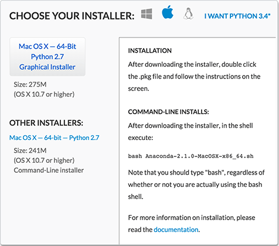

NESW Workshop
Telling Science Stories with Code and Data
Instructions for Participants
Our workshop will be a hands-on event. You’ll be writing, testing, and debugging your own programs on your own computer. At the end of the day, we want you to go home with a completed project that works. To make all this happen, you’ll need to do some advance preparation. In particular, it’s important that everyone arrive on Saturday morning with the necessary software already installed and working.
What to Bring
You will need a reasonably modern laptop computer, with working wifi, an up-to-date web browser, and enough available space on the disk drive for the software we’re about to install.
- Windows computers should be running Windows Vista or later (version 7, 8, or 8.1).
- Macintosh computers need OS X version 10.6.8 (Snow Leopard) or later.
- What about Linux? Should work, but we’re not giving step-by-step instructions.
- Google Chrome is the recommended web browser, but Firefox, Opera, or Safari should be fine too. If you prefer Internet Explorer, please make sure it’s the latest version.
- Installing the programming-language software will fill up about 1.1 gigabytes (1100 megabytes) of free disk space, and you’ll briefly need even more than that during the down-load-and-install process. If you are short of disk space, please see the note below. All of the software can easily be removed after the workshop, if you need to recover the space used.
Don’t forget to bring your power cord and charger!
Installing Python
In the workshop we’ll be exploring two programming ecosystems: Python for data analysis (and just about any other kind of computing), and JavaScript for building interactive storytelling aids. Let’s start with Python.
Even if you already have a version of Python on your machine, we suggest installing the Anaconda distribution from Continuum Analytics and using it for the workshop. It won’t interfere with your existing setup, and you can remove it later with no fuss.
- Go to http://continuum.io/downloads/. You should be offered an installer tailored to your operating system.  (If you’re offered the wrong choice, click one of the three icons at the top of the panel—windowpane, apple, tux.)
- Unless you’re a command-line guru, you probably want the “Graphical Installer.”
- Please choose Python version 2.7, which is the default option, not Python 3.4.
- Click the button to start the download. Now might be a good time to get a cup of coffee; it’s a big file.
- Note: You might see a message warning that “This kind of file could harm your computer.” Click the button to live dangerously.
- When the download completes, you should have a
.pkgfile on Macintosh or an.exefile on Windows. In either case, double-click it. - The installer program has its own on-screen instructions, and there's also a walk-through on the Anaconda website.
- You need to choose a place to put the software. On Macintosh the default choice is your home directory. The installer may display an error message: “You cannot install Anaconda in this location.” In fact you can, if you just click another choice and then return to the home-folder selection. Or you can put it anywhere else you’d like, such as the main “Applications” folder. (You may be asked for an administrator password.)
- If all goes well, you’ll get a message saying the installation was successful.
- And what if all doesn’t go well? You might find a LiveChat icon on the Continuum.io install page. There’s a FAQ. There’s an Anaconda Issues page on GitHub. There’s a Google Group where you can ask for help. Or get in touch with us—the workshop organizers.
- Once you’ve completed the installation, you can throw away the installer (the
.pkgor.exefile).
Trying Out Python and IPython Notebook
Command Performance
Installing the Brackets Editor for JavaScript
Short of Disk Space?
Questions that Might Be Frequently Asked
Q. I already have Python set up the way I like it, and I'm happy with my own web-dev environment. Do I have to install the software you recommend?
A. Of course not. But you might want to run the tests mentioned above